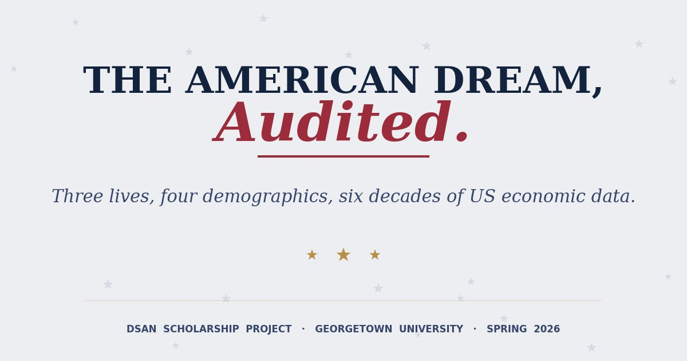
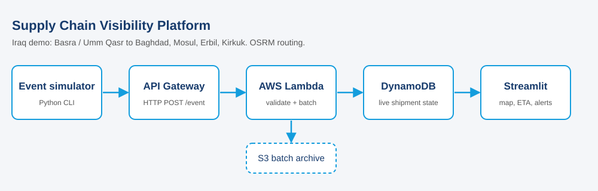
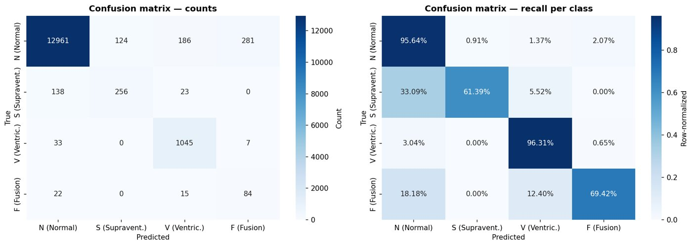
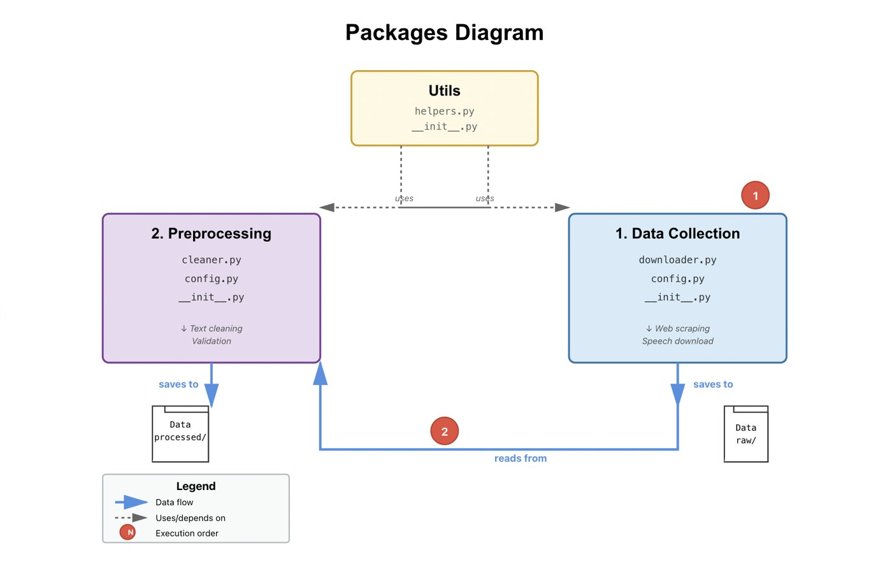

Mohammad Yassin

Name: Mohammad Yassin
Profile: Master's in Data Science & Analytics @ Georgetown University
Email: m.a.yassin707@gmail.com
Phone: (425) 520-1301
Skills
About me
I’m a passionate Computer Science graduate (B.S.) now pursuing my Master’s in Data Science & Analytics at Georgetown University. I thrive at the crossroads of data and decision-making, whether it’s uncovering actionable insights, shaping product roadmaps, or collaborating with diverse teams. Known for clear communication and a knack for translating complex concepts into simple stories, I’m always eager to learn new tools, tackle fresh challenges, and help build solutions that deliver real value.
Beyond the classroom, I’m driven by curiosity and impact—whether that’s experimenting with new machine-learning techniques, volunteering to mentor peers in coding workshops, or diving into cross-functional projects to sharpen my business acumen. Fluent in both English and Arabic, I bring a global perspective to problem-solving and value inclusive collaboration. With a growth mindset at my core, I’m excited to leverage my blend of technical training and strategic thinking to contribute meaningfully wherever I go.
Resume
Highlights of my education, work experience, and core competencies in data science and product strategy.
Summary
Mohammad Yassin
Enthusiastic Computer Science graduate (B.S., 2025) and incoming Master’s candidate in Data Science & Analytics at Georgetown University. I blend technical rigor (Python, R, SQL, machine learning) with strategic vision, translating data into actionable insights and guiding cross-functional teams to deliver measurable impact.
- Washington, DC
- (425) 520-1301
- m.a.yassin707@gmail.com
Education
Master of Science in Data Science & Analytics
2025 - 2027
Georgetown University, Washington, DC
Relevant Coursework: Data Science and Analytics, Probabilistic Modeling and Statistical Computing, Computational Linguistics – Advanced Python
Bachelor of Science in Computer Science
2021 - 2025
Hobart and William Smith Colleges, Geneva, NY
Minors: Data Analytics, Entrepreneurial Studies
Achievements: Hobart Dean’s List, Alger L. Adams Scholar, The Elizabeth and Ruth Young Peace Prize, The Martin Luther King Jr. Leadership Award, The Hobart and William Smith Spirit Award – Class of 2025
Professional Experience
Product Marketing Intern
2025 - Present
Yallah Medical, Remote, NY
- Conducted market and competitor analysis to inform product roadmap and identify opportunities to differentiate digital health services
- Collaborated with designers and developers to restructure website architecture, improving navigation and aligning features with user needs
- Produced blog content and social media campaigns that grew user engagement and demonstrated product value
Research Assistant Lead
June 2024 - August 2024
Data Analytics Department @ HWS, Geneva, NY
- Designed foundational data systems enabling a three-year environmental analytics project, ensuring scalability and continuity
- Led a cross-functional team of 5 student researchers in deploying a citywide IoT sensor network, coordinating data collection, technical design, and analysis
Data Science Intern
June 2023 - May 2025
Career Services – Hobart and William Smith Colleges, Geneva, NY
- Built a data pipeline in R to analyze employment trends among 5K+ graduates and inform strategy for student career readiness
- Delivered recommendations that improved employability, demonstrating ability to derive actionable insights from large datasets
- Designed an interactive dashboard to visualize enrollment data, enhancing accessibility for 200+ faculty members
Co-Founder - Mobile Active Recovery Service
June 2022 - August 2022
HWS Summer Sandbox Accelerator, Geneva, NY
- Amongst 15 winners selected from 200+ candidates to start a venture with the Startup Accelerator program
- Engaged in user and market research, pitch deck creation, and business development using lean startup methods
- Defined MVP requirements through 100+ customer interviews; collaborated with developers and mentors to prototype and pitch winning product concept
Projects
Selected work from my Data Science & Analytics coursework at Georgetown
- All
- Data & ML
- Cloud










Contact
Reach out if you have any questions!
Location
Washington, DC
Call Me
+1 425 520 1301
Email Me
m.a.yassin707@gmail.com